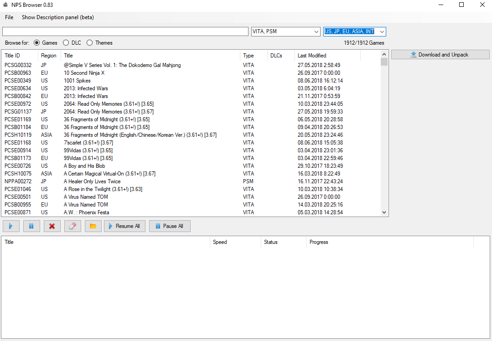

ATTENTION
Я являюсь составителем этого FAQ и снимаю с себя всякую ответственность за Ваши действия. Если Вы сделаете что-то не так, или не прочитаете нужную информацию - вина только Ваша. Как и Ваше право решать, стоит ли нарушать закон и взламывать вашу консоль для получения бесплатного софта.
Перед началом
Для фат-версии нужна карта памяти, без неё никак
Для удачного взлома также нужен активный аккаунт
Если у вас стоит 3.65 или ниже - обновляйтесь до неё, устанавливайте HENkaku по данному гайду и ставте Enso (внизу будет ссылка). Если выше 3.65 - обновляйтесь до 3.68 и устанавливайте по этому мануалу.
Желательно иметь консоль, заряженную хотя бы наполовину, чтобы избежать сюрпризов
Не торопитесь, вникайте в каждое слово и у вас всё получится
Установка
Скачиваем AH-Encore, распаковываем (не на диск C) и запускаем. Путь к папке не должен содержать русские буквы!
Просто следуем инструкциям на экране и устанавливаем H-Encore)
P.S. - зайдите в Настройки - Настройки HENkaku и поставьте галочку на Включить небезопасные приложения, иначе тот же VitaShell будет работать в безопасном режиме
PROFIT
Передача файлов через VitaShell
Скачиваем FileZilla и устанавливаем (будьте внимательнее, эти ребята любят всякие мелкие галочки в установщиках делать, но альтернатив толком нет)
Запускаем VitaShell, нажимаем кнопку START, пролистываем стрелочками до SELECT button и стрелочками вправо-влево выбираем FTP, нажимаем на круг, чтобы закрыть это меню
Теперь запускаем FileZilla на ПК, после чего на вите нажимаем SELECT. Появится строчка, начинающаяся с ftp://. В FileZilla сверху в поле Хост вводите первые четыре цифры через точки. После двоеточия идет порт. Введите его так же в поле Порт на ПК
 Нажимаем Быстрое соединение. Всё, вы подключились к своей вите. На крестик можете свернуть окошко с ip-адресом и портом
Чтобы передать файл, просто перетащите его в правую часть экрана
Нажимаем Быстрое соединение. Всё, вы подключились к своей вите. На крестик можете свернуть окошко с ip-адресом и портом
Чтобы передать файл, просто перетащите его в правую часть экрана
Установка игр
Скачиваем NPS Browser, устанавливать не нужно, сразу запускайте
При первом запуске нужно заполнить адреса таблиц и еще пару пунктов.
В Games/PSV tsv: https://nopaystation.com/tsv/PSV_GAMES.tsv
В Games/PSM tsv: https://nopaystation.com/tsv/PSM_GAMES.tsv
В DLCs/PSV tsv: https://nopaystation.com/tsv/PSV_DLCS.tsv
В Themes/PSV tsv: https://nopaystation.com/tsv/PSV_THEMES.tsv
В Download and unpack dir выбираем папку, куда будут сохраняться скачаные игры,
в Any pkg dec tool выбирайте pkg2zip.exe, который вы качали в самом начале (ссылка есть в шапке сайта)
Закрываем это окно
 Появляется вот такое окно, где вы можете выбрать игры, DLC или темы, их регион
Появляется вот такое окно, где вы можете выбрать игры, DLC или темы, их регион

Щелкаем по любой игре и скачиваем, нажав на Download and Unpack
Теперь качаем плагин NoNpDrm.skprx, подключаемся к вите по FTP и закидываем этот плагин в ur0:tai/. Там же есть файл config.txt, копируем его на пк, открываем, после строки KERNEL добавляем ur0:tai/nonpdrm.skprx. Сохраняем config.txt и перебрасываем его обрано на виту, соглашаясь на замену
Перезагружаем виту, снова активируем HENkaku через H-Encore
После этого на ПК идем в папку, которую вы выбрали для загрузок в NPW Browser, находим там папку app, открываем, и видим папку с игрой. Снова подключаемся к вите по FTP (чуть выше есть инструкция) и закидываем эту папку в ux0:app/, после чего нажимаем на треугольник в VitaShell и выбираем Refresh Live Area
Если после обновления появилась надпись не с нулем, то поздравляю, ваша игра установилась и появилась на LiveArea экране
DLC и патчи устанавливать точно так же, только вместо папки ux0:app копировать их в ux0:addcont/ и ux0:patch/ соответсвтенно
Загрузка игр прямо с PS Vita
Для этого нам нужно иметь уже установленный плагин NoNpDrm, чуть выше написано про него
Качаем PKGJ.vpk и pkgi.zip
Закидываем файл pkgj.vpk на виту по FTP в любое место, так же папку из архива pkgi.zip закидываем в ux0: (инструкция выше) и устанавливаем pkgj.vpk, выбрав его в VitaShell на крест
Открываем PKGJ с экрана LiveArea, нажимаем треугольник - Refresh
Через то же меню можно устанавливать фильтры для списка доступных игр и прочего. Чтобы скачать игру - нажмите крест на ней